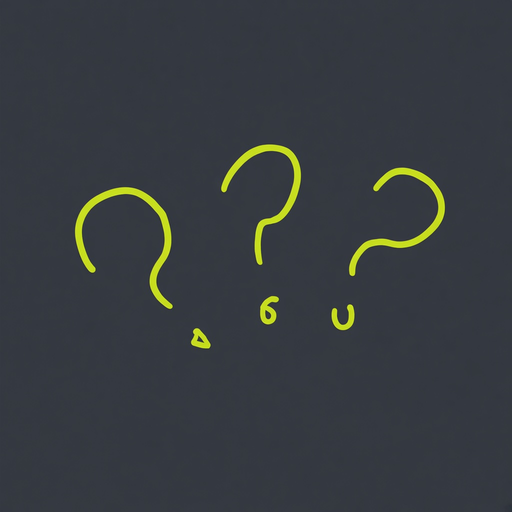

Your current icon: three hand-drawn lime question marks on slate. Three ways to keep it and tie it to Iffy.

The icon is the brand mark; Iffy lives only inside the app. Zero risk, no change in the store. The catch: the icon and the mascot look like two different styles.
Nothing changes except two little eyes on the middle question mark. People who know the app see the same icon; people who look closely spot Iffy hiding in the group. The icon and the mascot become one story.
Keep the icon as in B, and change Iffy himself from glossy 3D to the icon's thin, wobbly marker line. Everything matches the icon exactly. Softer and more handmade; less "character" at large sizes.
Notes: these overlays are placed on the existing PNG for a quick look. A final version would redraw the icon at full resolution with the eyes built in. If the icon changes even slightly, the App Store and Play need the new icon in the next build (the icon is part of the app binary, not an over-the-air update).